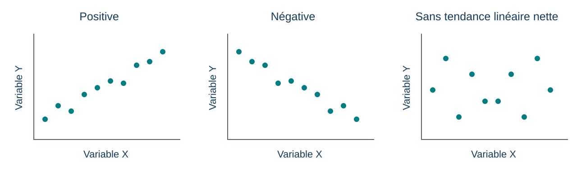
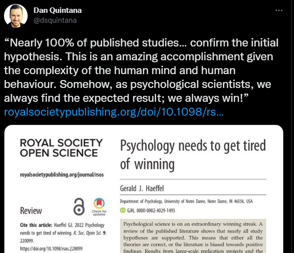
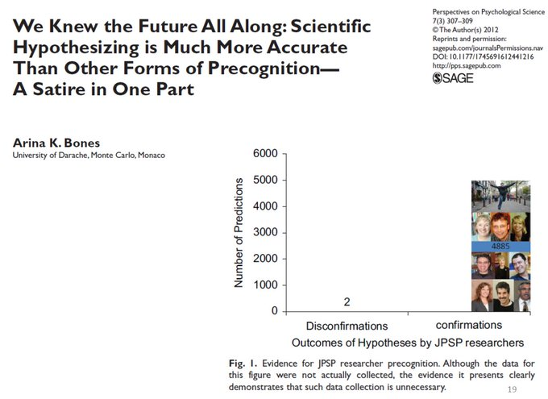
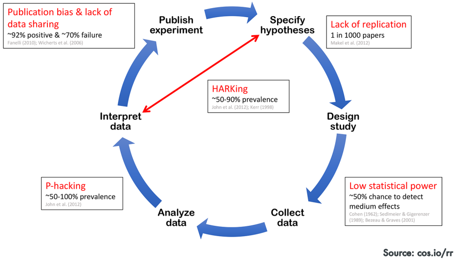
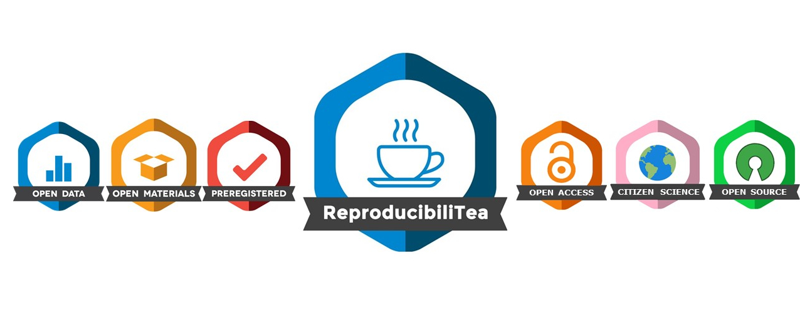

L’objectif : essayer le fonctionnement et la connexion avec votre identifiant UQAR avant le premier quiz évalué.
Pour chaque quiz, arrivez avec un téléphone ou un ordinateur portable bien chargé : une batterie déchargée pourrait vous empêcher de le compléter.
Retour sur le quiz test
Correction expliquée, puis questions sur le fonctionnement.
Qu’est-ce qui rend une réponse correcte?
Quelles consignes faut-il clarifier avant le vrai quiz?
Quiz du 15 septembre (1,25 %) : durée envisagée de 10 minutes, soit deux fois celle de cet essai.
Quiz et examen — quoi préparer?
15 septembre — Quiz 1 (1,25 %) : chapitres 1–2 et cours 1–2.
Les 8 meilleurs quiz sur 10 comptent pour 10 % de la note finale.
29 septembre — Examen 1 (25 %) : chapitres 1–4 et cours 1–4.
Les notions enseignées en cours peuvent être évaluées même si elles ne figurent pas dans le manuel, mais en général je m’en tiens au manuel et aux diapositives.
Toute autre ressource ou lien externe n’est pas matière à examen.
Plan de cours modifié
Des modifications ont été demandées par le Département.
Nous allons brièvement parcourir les différences avec la version précédente.
Trois acquis visés
Formuler une hypothèse vérifiable et mesurer ses variables.
Distinguer description, association et causalité.
Améliorer une étude : méthode, éthique et transparence.
Partie 1 — Construire et interpréter une étude
Retour sur l’activité de la robe
Nous avons observé des perceptions différentes, puis discuté en équipes.
Question de recherche : discuter avec des personnes du même avis modifie-t-il notre certitude?
Une expérience vécue peut susciter une question sans suffire à y répondre.
De la théorie à une hypothèse vérifiable
Une théorie propose une explication; une hypothèse en tire une prédiction à vérifier.
Exemple : la certitude augmente davantage après une discussion avec des personnes du même avis qu’après une réflexion individuelle.
Quel résultat contredirait cette prédiction?
Les étapes d’une recherche
Formuler les hypothèses.
Choisir la méthode de recherche.
Choisir les mesures.
Analyser les données.
Interpréter les résultats.
Puis : communiquer les méthodes et les résultats, vérifier, réviser.
Les décisions éthiques accompagnent toute la démarche.
Définir ce que l’on mesure
Concept
Exemple d’opérationnalisation
Certitude
Réponse de 0 à 100 à une question précise
Condition de discussion
Cinq minutes en groupe ou cinq minutes seul
Changement
Score après moins score avant
Une définition opérationnelle rend la procédure explicite.
Variables indépendante et dépendante
Dans notre expérience proposée :
VI (variable indépendante) — l’intervention, ce que l’on manipule : discussion ou réflexion individuelle.
VD (variable dépendante) — les résultats, ce que l’on mesure : changement du score de certitude.
Une caractéristique simplement mesurée n’est pas une manipulation.
La qualité d’une mesure
Fidélité : la mesure est-elle suffisamment cohérente et reproductible dans des conditions comparables?
Validité : les éléments disponibles soutiennent-ils l’interprétation du score pour l’usage visé?
Une mesure peut être cohérente et mal représenter le concept recherché.
Cinq familles de mesures
Famille
Exemple original
Point de vigilance
Verbale
Certitude déclarée de 0 à 100
Présentation de soi
Implicite
Temps de réponse à des associations
Interprétation du score
Physiologique
Fréquence cardiaque pendant l’échange
Activation non spécifique
Comportementale
Nombre de prises de parole
Parler n’est pas être certain
Non réactive
Traces d’usage d’un espace commun
Sens de la trace et vie privée
Lire une différence de moyennes
Dans un exemple fictif, le changement moyen de certitude est :
discussion : +12 points;
réflexion individuelle : +4 points.
L’écart des changements moyens est de 8 points.
Dans le groupe discussion, la certitude de chaque personne a-t-elle augmenté de 12 points?
Bonus : Que manque-t-il pour évaluer ce résultat avec plus de certitude?
Lire une corrélation

Le signe de r donne la direction; sa valeur absolue décrit la force de l’association linéaire.
Schéma original pour PSY1703 · Données fictives, sans résultat de cohorte
Signification statistique et importance
Une petite valeur p indique une incompatibilité des données avec le modèle statistique testé.
Elle ne donne ni la probabilité que l’hypothèse soit vraie, ni la taille de l’effet.
Examiner aussi l’ampleur, l’incertitude et le devis.
Association et causalité
Si l’appartenance et la participation varient ensemble :
l’appartenance pourrait influencer la participation;
la participation pourrait renforcer l’appartenance;
un autre facteur pourrait influencer les deux.
L’association seule ne permet pas de choisir entre ces explications.
Tester l’effet d’une discussion
Répartition aléatoire entre deux conditions :
Discussion en groupe
Réflexion individuelle
Mesure avant
Mesure avant
Cinq minutes de discussion
Cinq minutes de réflexion
Mesure après
Mesure après
Même consigne de mesure; comparer les changements.
Deux usages du hasard
Échantillonnage aléatoire : qui est sélectionné dans une population?
Assignation aléatoire : qui reçoit quelle condition dans l’étude?
Le premier concerne la sélection; le second aide à comparer les conditions.
Quatre devis à distinguer
Devis
Ce qui permet de le reconnaître
Expérimental en laboratoire
Manipulation et assignation aléatoire dans un contexte contrôlé
Expérimental sur le terrain
Manipulation et assignation aléatoire en milieu naturel
Quasi expérimental
Intervention ou événement étudié sans assignation aléatoire
Corrélationnel
Relations entre variables mesurées, sans manipulation
Trois questions de validité
Construit : mesure-t-on bien ce que l’on prétend mesurer?
Interne : peut-on attribuer l’effet à la manipulation?
Externe : à quelles personnes et situations le résultat peut-il s’appliquer?
Réduire les biais
Risque
Amélioration possible
Les volontaires diffèrent de la population visée
Diversifier le recrutement et décrire l’échantillon
Les personnes devinent la réponse attendue
Consignes neutres et questions sur leur compréhension
L’expérimentateur influence les réponses
Standardiser les consignes; masquer la condition si possible
Connectez-vous à Wooclap
Scannez le code QR, ou rendez-vous sur wooclap.com.
Code : LTJTCPR
Connectez-vous avec votre identifiant UQAR.
Gardez l’onglet ouvert : les questions apparaîtront dans Wooclap au fil de l’activité.
Ronde 1 · Les questions sont présentées dans Wooclap.
Q1. Quelle proposition est la plus directement vérifiable?
A. Les groupes ont une énergie particulière. B. Après cinq minutes de discussion, le score de certitude augmente davantage qu’après cinq minutes seul. C. L’être humain est fondamentalement social.
Wooclap — Ronde 1 · Mesure
Q2. Le score de 0 à 100 est…
A. une opérationnalisation de la certitude; B. une preuve que la certitude est mesurée sans erreur; C. une mesure directe de la personnalité.
Wooclap — Ronde 1 · Construit
Q3. Compter les prises de parole suffit-il à mesurer la certitude?
A. Oui, parce que le comptage est précis. B. Oui, si deux observateurs obtiennent le même compte. C. Non, la prise de parole peut refléter autre chose que la certitude.
Wooclap — Ronde 1 · Devis
Q4. Deux classes existantes suivent des activités différentes, sans assignation au hasard. On compare leurs progrès avant/après. Le devis est…
A. quasi expérimental; B. expérimental avec assignation aléatoire; C. nécessairement exempt de variables confondues.
Wooclap — Ronde 1 · Conclusion
Q5. Appartenance et participation sont associées. Que conclure?
A. L’appartenance cause la participation. B. La participation cause l’appartenance. C. Elles varient ensemble; la direction causale reste à établir.
Wooclap — Ronde 1 · Hasard
Q6. Des volontaires sont répartis au hasard entre deux conditions. Cela décrit…
A. un échantillon nécessairement représentatif; B. une assignation aléatoire; C. une absence garantie de toute différence initiale.
Pause 1 — 10 minutes
Envoyez vos suggestions de chansons ou photos de votre animal de compagnie directement sur Wooclap :
Scannez le code QR, ou rendez-vous sur wooclap.com.
Code : LTJTCPR
Connectez-vous avec votre identifiant UQAR.
Gardez l’onglet ouvert : les questions apparaîtront dans Wooclap au fil de l’activité.
Atelier 1 — Comment mesurer l’appartenance?
8 minutes · Trouvez un binôme de votre équipe Blancs-Ors ou Bleus-Noirs.
Une équipe de recherche veut mesurer le sentiment d’appartenance à un groupe. Elle propose de compter les prises de parole.
Sur papier ou dans vos notes, écrivez :
Une question exacte, avec ses choix de réponse, pour mesurer l’appartenance.
Une raison pour laquelle parler peu ne signifie pas nécessairement se sentir exclu.
Un deuxième indice à recueillir et sa limite.
Une personne rédige; l’autre vérifie ce que chaque mesure permet de conclure.
Partie 2 — La science ouverte et au-delà
Pourquoi trouve-t-on si souvent ce que l’on attend?

Si seuls les résultats attendus circulent, quelle image de la recherche obtient-on?
Capture conservée de PSY7104 (2022) · Dan Quintana, à propos de Haeffel (2022).
La confirmation poussée jusqu’à la satire

Satire : ces nombres ne sont pas des données empiriques.
Arina K. Bones (2012) · Image reprise de PSY7104 (2022).
Où les résultats peuvent-ils se déformer?

Les chiffres incrustés sont historiques; retenons les mécanismes.
Schéma COS, source indiquée sur l’image : cos.io/rr · Archive utilisée en 2022.
Pause 2 — 10 minutes
Envoyez vos suggestions de chansons ou photos de votre animal de compagnie directement sur Wooclap :
Scannez le code QR, ou rendez-vous sur wooclap.com.
Code : LTJTCPR
Connectez-vous avec votre identifiant UQAR.
Gardez l’onglet ouvert : les questions apparaîtront dans Wooclap au fil de l’activité.
Des choix qui changent l’histoire racontée
Sélectionner la mesure, l’exclusion ou l’analyse qui donne le résultat souhaité : risque de p-hacking.
Présenter une explication imaginée après les résultats comme une prédiction préalable : HARKing.
Rapporter seulement les études qui « fonctionnent » : biais de publication.
La science ouverte

Rendre le travail accessible, compréhensible et vérifiable.
{kind=link}